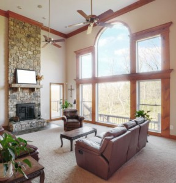
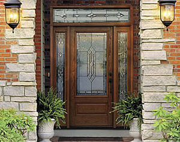
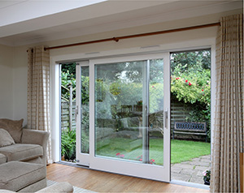
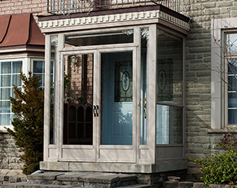

Casement windows
Elegant, side-hinged vinyl casements that add charm to any GTA home.
Casement window detailsWe supply and install thermal vinyl windows, entry doors, sliding patio doors and porch enclosures. Canadian company, trained installers, quality you can count on.

GTA Windows and Doors offers variety, quality and beauty for your home. Choose from thermal vinyl windows, sliding patio doors, exterior doors and porch enclosures to fit any house in the Greater Toronto Area.
Our products are built to strict specifications and checked for operation and craftsmanship. Our team has years of experience replacing and installing exterior doors and home windows, so the finished job looks as good as the product.
Local sales and installation across the GTA.
Professionally trained crews, with clean and tidy work.
Every window and door is checked before it reaches your home.
Options to suit different budgets and lifestyles.
Whatever the style of your home, there is a vinyl window that fits. Here is what we install.
Elegant, side-hinged vinyl casements that add charm to any GTA home.
Casement window detailsHinged at the top, so you can ventilate even in light rain.
Awning window detailsTilt-in vinyl sliders for maximum ventilation.
Double slider detailsA clean, simple look for homeowners who are choosy about their exterior.
Single slider detailsEasy to clean, energy efficient, with a traditional look.
Double hung detailsIdeal where space is tight, since they open upward instead of outward.
Single hung detailsAdd depth and light to a room with a bay or bow window.
Bay and bow detailsBetter curb appeal, improved efficiency and stronger resale value.
Basement window detailsTurn any room into an indoor garden with a custom greenhouse window.
Greenhouse window detailsArches, circles and custom shapes for homes with unique needs.
Special shape details

Add beauty and value to your home with elegant sliding patio doors in a wide range of styles.

The porch is the first thing visitors see. Make it warm, welcoming and protected from the weather.
We install in these communities. Choose yours to see local details.
We were extremely happy with the service we got from GTA Windows and Doors. They were super friendly and had a great variety of doors and windows. Installation was quick and clean as well.
In the past 10 years we did all our upstairs windows and all our doors with GTA Windows and are very happy with the service. Clean and neat!
We replaced several windows with GTA Windows and Doors and were very happy with the job from start to finish, from the sales representative to the installers.
GTA Windows installed a new front door and one side light with no problems. The installers came on time and did the job very well.
We supply and install vinyl casement, awning, double hung, single hung, single slider and double slider windows, plus basement, greenhouse, bay, bow and special shape windows.
We serve homeowners across the Greater Toronto Area, including Toronto, Mississauga, Brampton, Richmond Hill, Markham, Thornhill, Woodbridge, Aurora, Newmarket, Oakville, Pickering, Ajax and Stouffville.
Yes. Call 416-638-8300 or toll free 1-877-482-4968, or request a free estimate online.
Yes. We install steel and fiberglass entry doors, garden doors, vinyl sliding patio doors and porch enclosures.
Tell us about your project and we will get back to you with options and pricing.
900 Alness St., Suite 204
Toronto, Ontario M3J 2H6
Get directions
Phone: +1 416 638 8300
Toll free: +1 877 482 4968
Email: windows@gtawindows.com